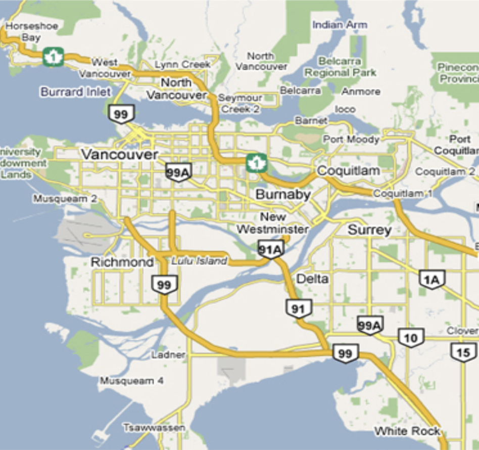
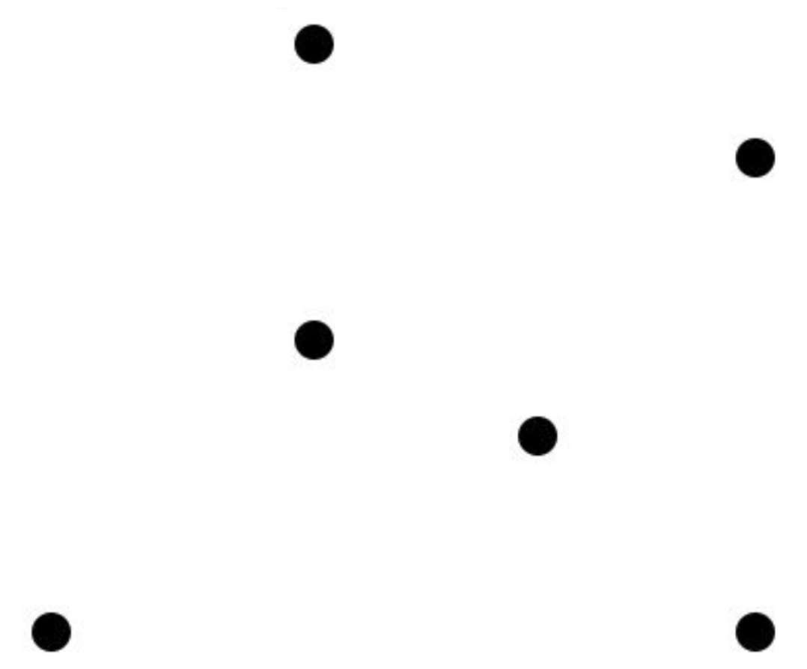
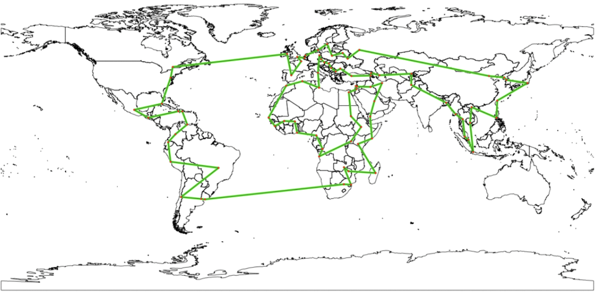
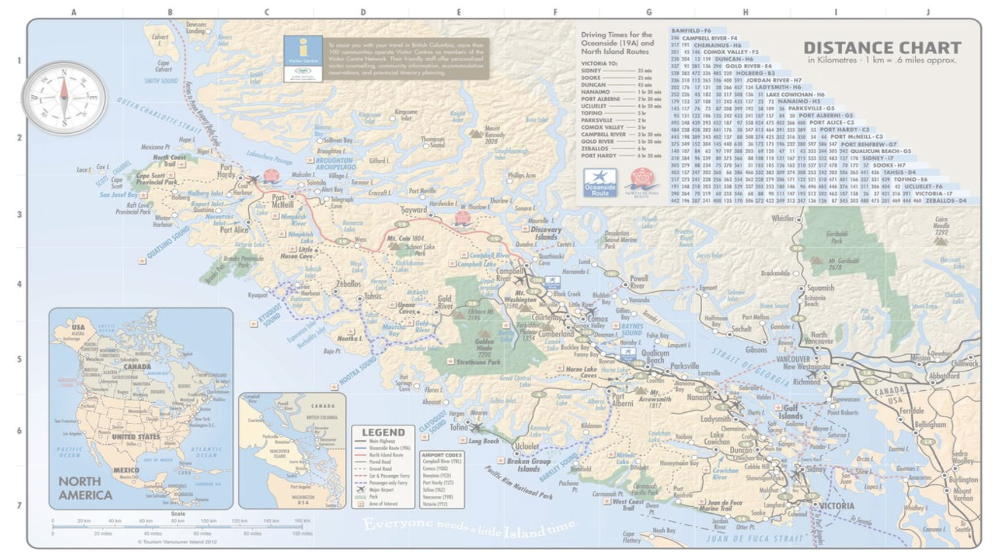
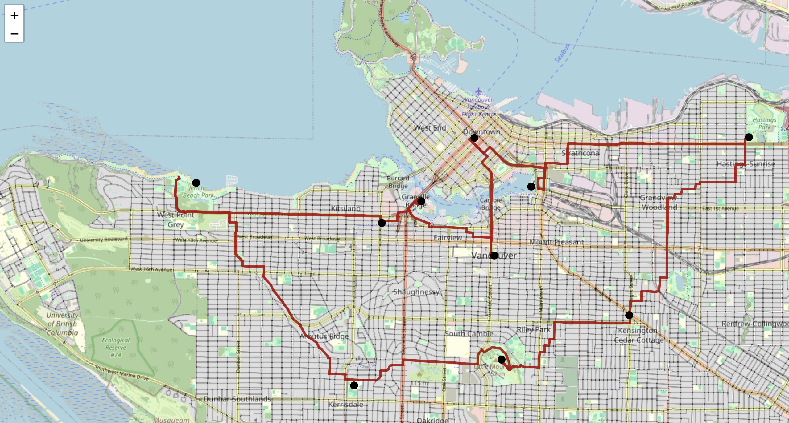

Week 12: The Hardest Easy Problem
Dijkstra finds the shortest route between two places. This week we asked a harder question: what if you have ten places, and you need to visit all of them? This single tweak — from “shortest path” to “shortest tour” — turns a fast, elegant algorithm into one of the most notoriously difficult problems in computer science. Welcome to the Travelling Salesperson Problem.
Your Growing Toolkit
- Representation — how we encode meaning
- Collections — how we group things
- Control flow — how we make decisions and repeat
- Functions — how we name and reuse logic
- Abstraction — how we hide complexity
- Efficiency — how we measure cost
This week: TSP + Permutations + Brute-force optimization — when the problem is hard, we start with the honest approach!
Tuesday: Meet the Travelling Salesperson
From Shortest Path to Shortest Tour
Last week, Dijkstra gave us the answer to “how do I get from A to B as fast as possible?” Now imagine you’ve got nine Saturday errands — the PNE, Science World, Granville Island, City Hall, and five more stops scattered across Vancouver. You need to visit all of them and get home. What order do you do them in?


This is the Travelling Salesperson Problem (TSP):
Given a list of cities and the distances between each pair, what is the shortest possible route that visits each city exactly once and returns to the origin?
First formally studied in 1930. Studied by thousands of researchers since. Still not fully solved.
Why Is It So Hard?
With 6 locations, how many different tours are there? Fix the starting point (tour length doesn’t depend on where you start — more on that below). Then count the orderings of the remaining stops:
- 2nd stop: 5 choices
- 3rd stop: 4 choices
- 4th stop: 3 choices
- …
Answer: \((k-1)!\) tours for \(k\) locations.
| Locations | Tours |
|---|---|
| 5 | 24 |
| 10 | 362,880 |
| 15 | 87,178,291,200 |
| 20 | 60,822,550,204,416,000 |
With 20 errands, there are more candidate tours than grains of sand on Earth. Brute-force stops being feasible somewhere around 20 stops. This is why TSP is hard — and why it’s been studied for nearly a century.
TSP is NP-hard: no one has found a fast algorithm that guarantees the optimal solution for large inputs, and most researchers believe none exists. (This is the famous P ≠ NP conjecture.) You can get excellent approximate solutions quickly, but proving you have the best tour is another matter entirely.
What a Great Solution Looks Like

This blog post used modern TSP heuristics to tour all world capitals in just 90,414 km. That’s not proven optimal — but it’s the product of decades of algorithmic research. A random tour would be vastly longer. This is what good TSP approximation algorithms buy you.
SSSP vs TSP: Two Very Different Questions
Now that we know both algorithms, here’s the contrast in full:
| Aspect | SSSP / Dijkstra | TSP |
|---|---|---|
| Goal | Shortest route from one start to each vertex | One cheapest tour visiting all vertices and returning |
| Shape of result | A tree of paths from the source | A cycle through all vertices |
| Must visit all? | No — each path can skip most vertices | Yes — every vertex exactly once |
| Difficulty | Fast! Dijkstra runs in \(O(n \log n)\) | NP-hard — no known fast exact algorithm |
Same ingredients (a weighted graph), completely different problems.
Our Plan: Five Steps
We built the solution piece by piece. Each step is a clean, testable function:

- Assemble the graph and errands — download the Vancouver road network via OSM, geocode each errand address, snap it to the nearest road node
- Compute pairwise distances — for every pair of errand nodes, run Dijkstra to find the driving distance and store the full turn-by-turn path
- Generate all permutations —
itertools.permutations(nodes)enumerates every possible visit order - Find the minimum tour — loop through all permutations, compute total distance, keep the shortest
- Visualize — stitch the pre-computed paths together and draw the route on an interactive folium map
Step 2: The Distance Table
We need driving distances between every pair of errand locations. The structure:
dfdist['Vancouver']['Bellingham'] # → distance in metres
dfdict['Vancouver']['Bellingham'] # → list of road nodes (turn-by-turn)Using nx.shortest_path_length and nx.shortest_path with weight='length', we fill both tables for all pairs. This step runs Dijkstra \(k^2\) times — expensive upfront, but we only pay it once. Every subsequent tour calculation just looks up dfdist[a][b].
Step 3: Permutations and a Clever Shortcut

The tour A → B → C → D → A has exactly the same total distance as B → C → D → A → B. It’s the same cycle, just entered at a different point.
This means we can fix the starting location and only permute the remaining \(k-1\) stops — shrinking \((k)!\) tours down to \((k-1)!\), a factor-of-\(k\) speedup.
Step 3B: Tour Distance
Given a tour ordering — say A, D, B, E, F, C — the total distance is:
\[\text{dfdist}[A][D] + \text{dfdist}[D][B] + \text{dfdist}[B][E] + \text{dfdist}[E][F] + \text{dfdist}[F][C] + \text{dfdist}[C][A]\]
Each leg uses a pre-computed Dijkstra shortest path. The last term wraps back around to the start — this is the cycle that makes it a tour, not just a path. In code: dfdist[tour[k]][tour[(k+1) % len(tour)]].
Lambda Functions: Writing Less, Saying More
The TSP code leans on a compact Python feature: lambda (anonymous) functions.
dferrands['latlong'] = dferrands.apply(
lambda row: ox.geocode(row['errand']),
axis=1
)df.apply(..., axis=1)calls a function once per row of the DataFramelambda row: ox.geocode(row['errand'])is that function — defined right where it’s used, nodef, no name- The return value fills the new
latlongcolumn
Why lambda? When you only need a function in one place and it fits in one expression, a lambda keeps things tight and readable. You’ve already used this pattern with sorted(items, key=lambda x: x[1]).
Thursday: Building the Solver
From Concept to Code
Thursday was a working session — we took the five-step plan and built it live, step by step, in a real marimo notebook running on actual Vancouver road data.
The class activity walked through each function:
compute_pairwise(G, nodes) — iterate over every pair of errand nodes, check nx.has_path, store the shortest path and length in nested dicts.
tourlength(tour, dfdist) — sum dfdist[tour[k]][tour[(k+1) % len(tour)]] for all \(k\), wrapping back to the start with modulo.
find_best_tour(tours, dfdist) — classic “find minimum” pattern: initialize with tours[0], loop over all tours, update when you find a shorter one.
assemble_route(tour, dfdict) — stitch the pre-computed paths: start with [tour[0]], then append dfdict[tour[k]][next_stop][1:] for each leg (the [1:] avoids duplicating the junction node).
The Payoff: A Route on a Real Map
After the solver runs, assemble_route stitches the pre-computed Dijkstra paths into a single turn-by-turn sequence of road nodes. Drop that into folium and you get a real, drivable route drawn on an interactive Vancouver map — the optimal order to run your Saturday errands, proven by exhaustive search.
When assembling the final route, you might be tempted to call nx.shortest_path again for each leg. But you already computed those paths in Step 2! Storing them in dfdict means assembly is just dict lookups — no repeated work, no risk of getting a different path.
Why TSP Matters
Ten errands feels like a toy problem. But the same algorithm structure applies everywhere:
| Industry | Application |
|---|---|
| 📦 Logistics | UPS saves millions annually by cutting even 1 km/driver/day |
| 🍔 Food delivery | UberEats/DoorDash multi-stop pickup with time windows |
| 🧬 Genomics | DNA fragment ordering in genome assembly |
| 🚌 Transportation | School bus routing, snowplow and garbage truck coverage |
| 🧪 Lab automation | Robotic arm scheduling across multi-station workflows |
| 🏭 Manufacturing | CNC tool path optimization — fewer moves = less wear and heat |
| ✈️ Airlines | Crew scheduling: crews must return to base, meet rest rules |
| 🚑 Emergency services | Ambulance routing — seconds matter |
Brute-force only works up to about 20 stops. Beyond that, the field of combinatorial optimization has decades of clever approximation algorithms, heuristics, and special-purpose solvers — all built on the same foundation we laid this week.
What’s Next?
We’ve now built a complete graph application from scratch: real map data → graph → algorithm → interactive visualization. That’s the full stack.
Project 3 (Campus Walks) uses the same ideas but with depth-first search instead of brute-force enumeration — finding a workout route of a target length on the UBC road network, with a preference for going straight.
Week 13: data visualization — putting our results on the screen in a way that communicates clearly and beautifully.